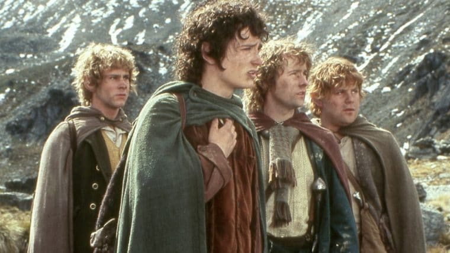
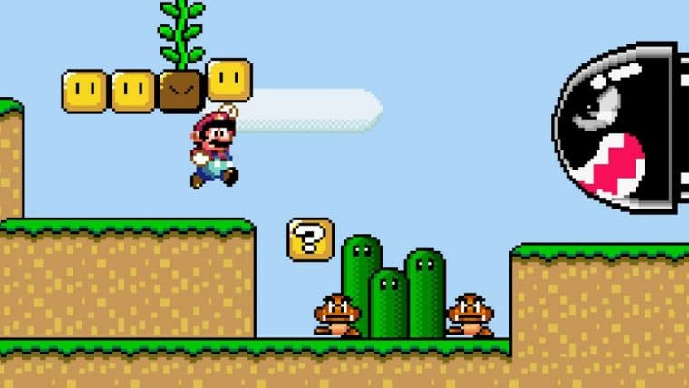
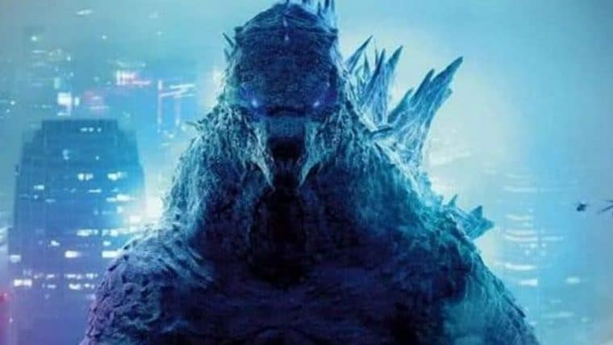
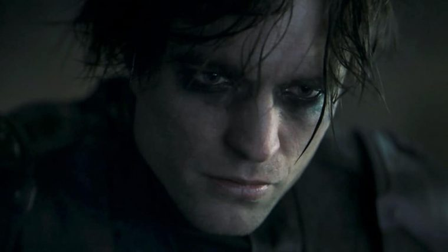

Série de O Senhor dos Anéis terá episódios dirigidos por Wayne Che Yip, de Hunters
Viúva Negra será lançado no premier access do Disney Plus junto da estreia nos cinemas

Brazilians Against Time, maratona beneficente de speedruns, começa no final de março

Novo trailer de Godzilla vs Kong traz cenas inéditas e Mechagodzilla

Filmes da Warner voltarão a ser lançados exclusivamente nos cinemas em 2022